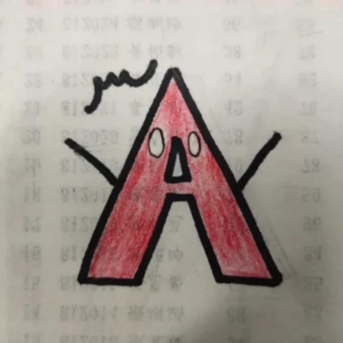
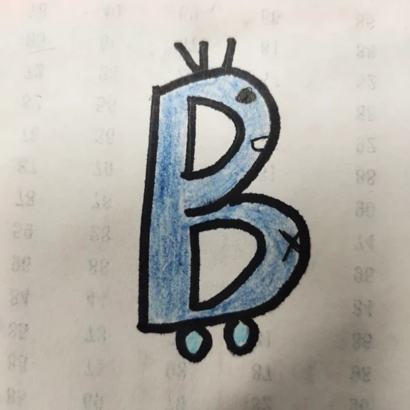
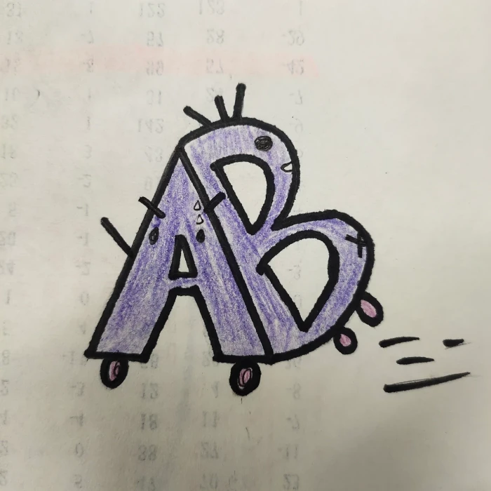

回到首頁
關於本站
血型性格
問卷調查
TOP

知己
-
優：理性、保守、耐心、認真負責、善忍耐、愛和平、擅長配合、堅持
-
缺：挑剔、固執、緊張、復仇心強、不擅長道歉、悲觀、不擅長拒絕、佔慾強、優柔寡斷、強迫症、慢性子
知彼(與其他血型的最好相處方式)
- A型 用一顆真誠的心與對方交朋友
- B型 最佳相處方式就是經常關心他們
- O型 與他們相處的時候，能夠放心地說心裡話
- AB型 耐心地傾聽他們的內心想法

知己
-
優：自由、樂觀、實踐、創意、熱情、同情心、不愛背後說閒話、口風緊、不擅長說謊、性情直接
-
缺：自私、不負責任、燃點低、隨便、不善打理、慢熱、健忘、不會察言觀色，怕寂寞
知彼(與其他血型的最好相處方式)
- A型 換位思考，站在對方的角度思考問題
- B型 遇到任何事情不要落井下石，要互相諒解
- O型 經常讚美他們，並收斂自己的個性，常謙讓
- AB型 委婉地說出意見
知己
-
優：好相處、不記仇、善交際、樂觀、記憶力強、和平主義者、善傾聽、現實
- 缺：自負、嫉妒、情緒化、少根筋、小題大作、自尊心強、忽冷忽熱
知彼(與其他血型的最好相處方式)
- A型 心存感激，絕對不能把寬容當做是理所當然
- B型 不要忽略或是無視，要時刻留意他們
- O型 凡事都與對方商量，不要一意孤行
- AB型 最好的相處方式是：三思而後行

知己
-
優：冷靜、自制、理性、分析能力強、適應性強、思維敏銳、喜歡被依賴。
-
缺：健忘、古怪、懶散、常後悔、逞強、不擅長拒絕、不擅長表達自己。
知彼(與其他血型的最好相處方式)
- A型 溫柔地對待他們
- B型 適時地調控情緒
- O型 經常發自內心地讚美
- AB型 適當地表達自己